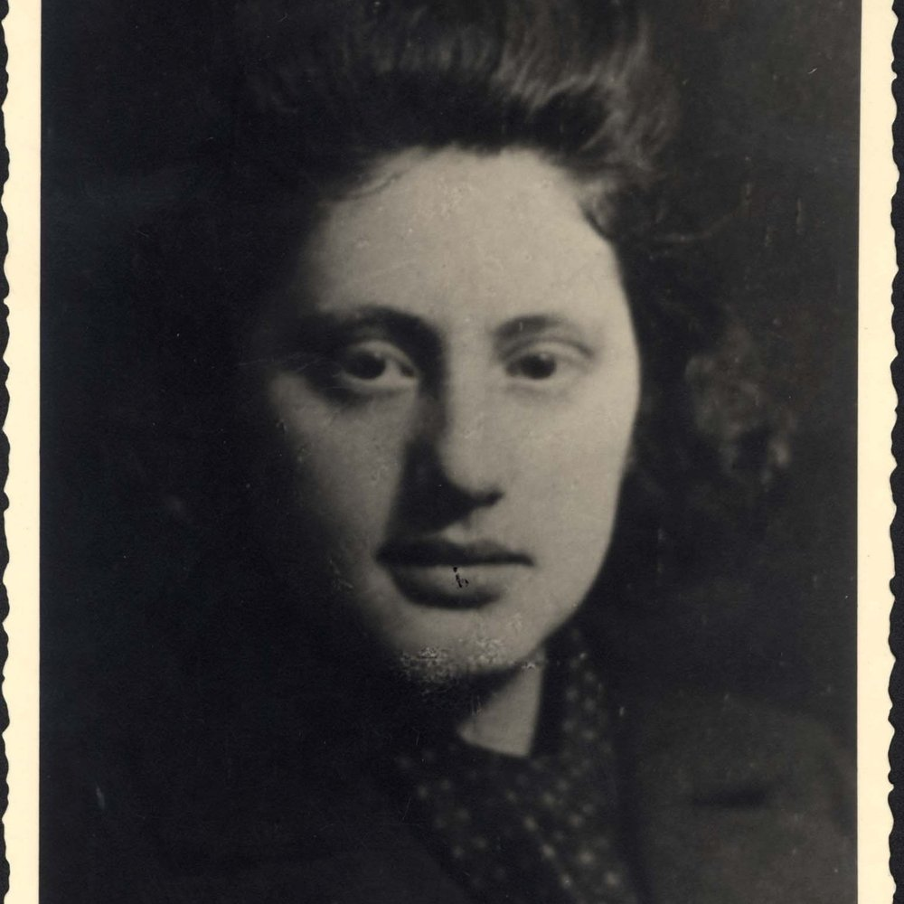
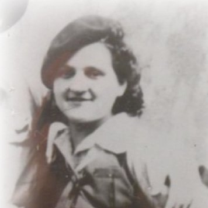

Département Haute-Loire
Les biographies
3 fiches liées au département.

Enfants Mett

France Klain

Histoire des jeunes victimes juives de la Shoah
Département Haute-Loire
3 fiches liées au département.

